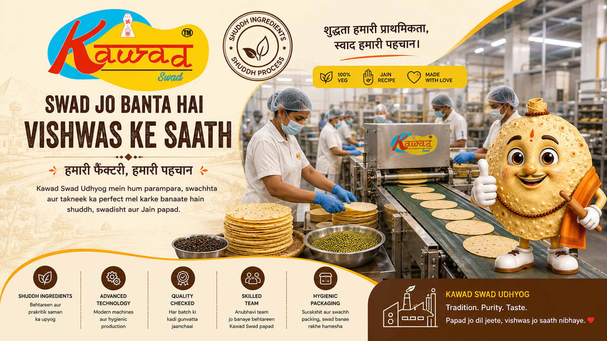
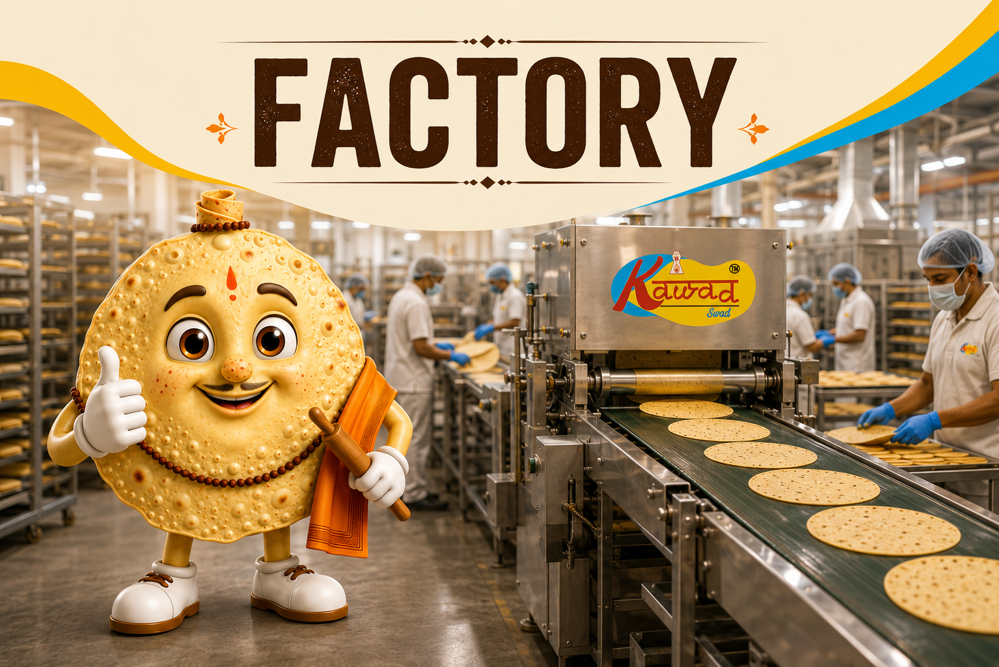

Our Manufacturing Philosophy
At Kawad Swad Udhyog, our manufacturing process balances strict adherence to authentic Jain dietary standards with modern, touchless hygienic equipment. From raw pulse cleaning to automated dough kneading, rolling, and moisture-controlled drying, quality is preserved at every step.
Operating under FSSAI license parameters (Lic No. 21425890001224), our facility maintains rigorous sanitation controls, batch testing protocols, and protective foil packaging to ensure uniform crispness, long shelf life, and authentic Nimar flavor in every single pack.
Certifications & Compliance
FSSAI
FSSAI License
Lic No: 21425890001224
GSTIN
GST Registration
23AIAPJ3923D1ZX
UDYAM
MSME Enterprise
UDYAM-MP-28-0044363
JAIN
100% Vegetarian
Strict Jain Guidelines